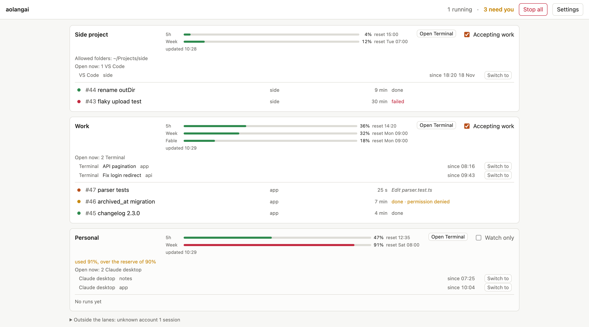

aolangai
Every Claude account's quota and open sessions on your Mac in one place, and work handed to the account with the most quota left.
aolangai.openyard.cloud
macOS app and command · open source · MIT
Every Claude account's quota and open sessions on your Mac in one place, and work handed to the account with the most quota left.
aolangai.openyard.cloud
macOS app and command · open source · MIT
